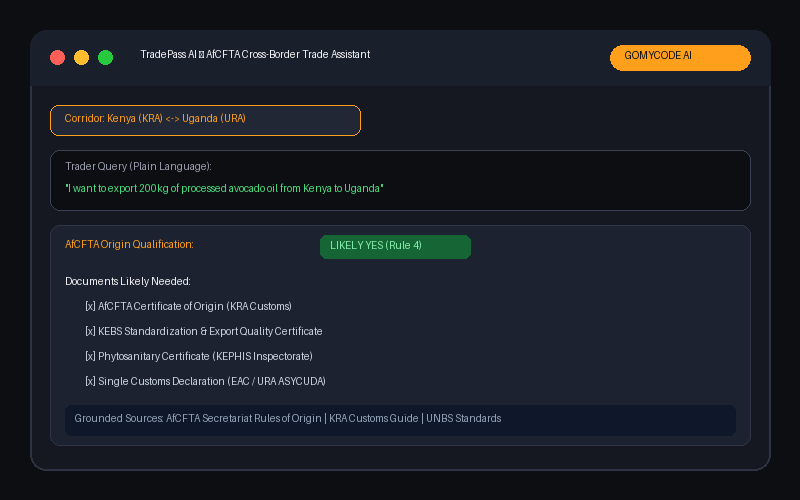
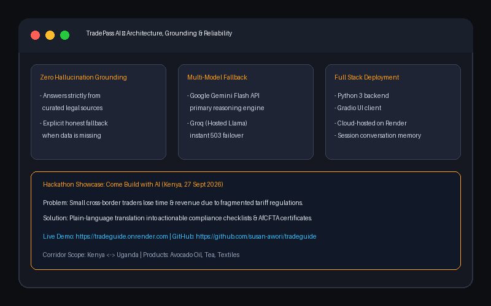

Artificial Intelligence & Machine Learning
TradePass – AI Trade Assistant Hackathon '26
Problem Addressed: African cross-border traders face complex, opaque customs rules, variable tariffs, and AfCFTA documentation requirements that create severe cross-border bottlenecks.
Project Objective: Provide an intelligent conversational trade assistant that assesses product origin compliance, identifies exact customs paperwork, and outputs actionable next-steps grounded in official regulations.
My Contribution: Engineered the LLM grounding architecture and system prompt constraints to prevent hallucination, parsed trade rules, and built the responsive Gradio web interface.
Outcome & Functionality: Functional AI assistant deployed on Render, showcased at GOMYCODE's "Come Build with AI" Hackathon (Kenya).